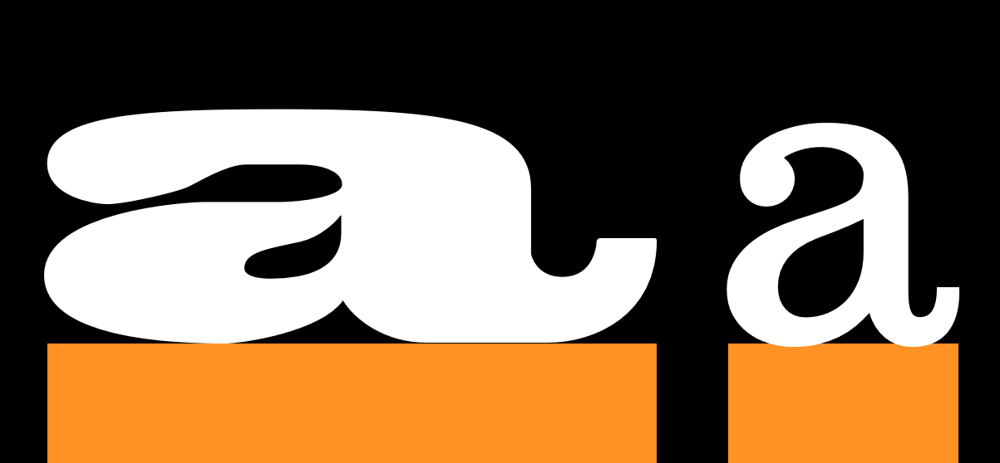
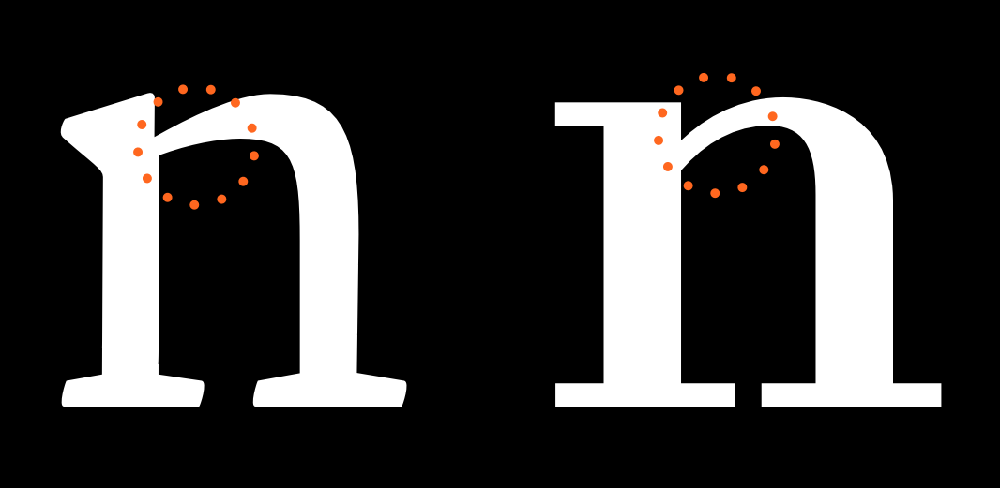

Что такое шрифт?
Что отличает шрифты от рукописного текста, каллиграфии, надписей и логотипов?
Самая большая проблема, которая отличает шрифтовой дизайн, — это необходимость того, чтобы каждый глиф в шрифте работал с каждым другим глифом. Часто означает, что дизайн и расстояние между каждой частью шрифта представляют собой серию осторожных компромиссов. Компромиссы означают, что можно лучше всего думать о дизайне шрифтов как о создании замечательной коллекции букв, а не как о коллекции замечательных букв. Другими словами, думать о группе и о том, как она будет действовать вместе, и ставить это выше любого вопроса о том, что замечательного в одном письме.
Эта необходимость расставлять приоритеты в отношении системы, а не какой-либо отдельной части, также приводит к необходимости анализировать наш процесс проектирования на уровне системы. Характеристики, охватывающие буквы, становятся тем, на чем задача сосредоточиться, особенно в начале процесса проектирования.
Другая странность шрифтового дизайна заключается в том, что формы, которые проектируются, в значительной степени уже устоялись. Задача как шрифтовиков — не столько создать совершенно новую форму, сколько создать новую версию существующей формы. Это может сбить с толку дизайнеров новых шрифтов. Найти нужную сумму изменений, чтобы возбудить, но не оттолкнуть читателя, — непростая задача. Часто дизайнеры застревают в специфическом мышлении. Этой ошибки можно легко избежать, если с самого начала понимать, что наиболее значимыми в шрифте являются те его части, которые больше всего повторяются. Дизайн шрифта — это не только разработка характеристик, применимых к общим формам, которые известны всем, но и к формам, которые встречаются чаще всего.
Также полезно осознавать, что эти характеристики не только помогают создать голос или атмосферу шрифта, но также определить, для чего шрифт будет или не будет полезен, а иногда и для определения технологических контекстов, для которых шрифт подходит.
Подобный подход к дизайну шрифта может показаться пугающим или чрезмерно абстрактным. Однако привыкание к этим идеям — ключ к более быстрому, эффективному и удовлетворительному процессу проектирования шрифтов.
Начать с определения основных системных характеристик шрифтового дизайна.
Конструкция

Конструкция относится к структуре основных штрихов, образующих определенный глиф. Возможно, представить себе скелет глифа. Какой тип конструкции использовать, пожалуй, один из самых важных вопросов, над которым следует подумать, поскольку конструкция влияет на многие оставшиеся варианты, особенно если дизайн покажется читателям чем-то знакомым. В приведенном выше примере белые линии внутри букв обозначают приблизительную конструкцию, подсказываемую формой самих букв.
Однако способ окончания штрихов (‘terminals’ ) и ‘serifs’ (смотреть ниже), как правило, не являются частью того, что подразумевается под ‘construction.’. Конструкция представляет собой скелет глифа, в то время как остальные — ширина, вес, терминалы — являются частями flesh.

Пропорция X-height к Cap-height

Буквы слева взяты из [Playfair Display], что имеет большую высоту по оси X относительно cap-height. Буквы справа взяты из EB Garamond, который имеет меньшую x-height. В приведенном выше примере размер H был скорректирован так, чтобы они совпадали.
Ascender Высота

В приведенном выше примере x-heights сопоставлены, чтобы проиллюстрировать относительную разницу в высоте ascender.
Надстрочные элементы обычно хотя бы немного превышают cap-height, особенно в текстовом дизайне. Однако в некоторых случаях они могут соответствовать или даже быть ниже, чем cap-height. Более длинные восходящие элементы могут добавить элегантности внешнему виду шрифта. Они часто используют x-height меньшего размера.
Descender глубина

Как и восходящие элементы, длинные descenders могут выглядеть элегантно.
В совокупности длинные ascenders и descenders могут стать трудными для управления. Если шрифт будет использоваться с небольшой высотой строк, удлинение означает, что буквы могут сталкиваться в строках текста.
Ширина

Ширина шрифтового дизайна изменит не только его восприятие, но и то, для чего он полезен. Пример справа взят из текста face. Пример слева — дизайн отображения, призванный привлекать внимание. Также возможны буквы, более узкие, чем в примере с текстовым шрифтом, и их можно использовать для экономии места или для размещения большего количества текста в меньшем пространстве.
Регулярность ширины против изменчивости
Буквы в верхнем ряду этого примера имеют большее разнообразие ширины, чем буквы в нижнем ряду.

Weight

Slant

Contrast
Контрастность означает, насколько сильно варьируется ширина штриха внутри глифа. Обратить внимание на два глифа ‘O’ ниже, что тот, что слева, имеет гораздо большую вариативность толщины линии между верхней и боковой частью глифа. Оба глифа имеют некоторый контраст, но у левого он гораздо больше, чем у правого.

Шрифт с одинаковым весом (шириной штриха) в форме букв или без видимого контраста резко отличается от контрастного шрифта. Как и выбор между засечками и без засечек, контраст — это ранний выбор шрифтового дизайна. Интересно отметить, что в дизайне с засечками ‘slab’ обычно используется одинаковая ширина штриха в буквах, и что дизайн плиточных засечек касается не только засечек, как это звучит! Необходимо помнить, что действуют правила восприятия. (смотреть “Доверять своим глазам”) — Контраст – это то, как вес выглядит, а не то, каким он будет.
Угол контраста
На изображении ниже показано, что тонкие части форм строчной буквы ‘o’ различаются. В глифе слева тонкие точки лежат на идеально вертикальной оси. В глифе справа ось диагональная.

Weight распределение
Если в шрифте контрастность очень мала или вообще отсутствует, не нужно об этом думать. Однако большинство шрифтов имеют хотя бы некоторую степень контраста. В этих случаях широкий выбор вариантов распределения веса (weight) шрифта.
Vertical

Вертикальное распределение веса очень распространено. 9 и 8 выше являются особенно ярким примером.
Horizontal

Горизонтальное распределение веса встречается гораздо реже, но, тем не менее, встречается во многих шрифтах.
Bottom-heavy

Top-heavy

Irregular

Stems

Легко предположить, что стебли (stems) просто будут прямыми и что это не является серьезной проблемой, но вес и форма стеблей — это вещи, которые можно и требуется осознать.
Joins

Bowls
Обратить внимание, что на рисунках ниже чаши — это обводка, а не черные внутренние формы. Внутренние штрихи обозначаются как “counters”. При разработке шрифта часто меняется работа не из-за формы или ширины штриха, а из-за формы и размера счетчика (counter).

Terminals
Терминалы — это конечные формы штрихов. Они не такие, как засечки. Часто перпендикулярны углу штриха на его конце или срезаны по горизонтали или вертикали. Также могут отражать форму пера или другого инструмента для нанесения отметок, который напоминает форма букв.

Speed

Кажется, что ‘n’ слева пишется намного быстрее, чем справа. Более подробно скорость обсуждается в главе [on italics].
Regularity
Следующие характеристики присутствуют не во всех типовых проектах, однако они являются переменными, которые могут быть частью дизайна. Если это так, стоит задуматься о том, в какой степени они будут играть роль переменной.
Flourish

Обратитm внимание, что в верхнем шрифте flourish чаще встречается в заглавной букве, а второй, flourish, в большей степени в нижнем регистре.
Serif - Быть или не быть
Serifs — один из наиболее различных аспектов гарнитуры, и часто первая классификация шрифта проводится между serif и шрифтом без засечек.
Выбор влияет на то, как будут выглядеть конечные терминалы. Засечки могут быть двусторонними и односторонними. Могут быть перпендикулярны штриху или иметь собственное направление (например, быть всегда горизонтальными или вертикальными). Засечки могут быть со скобками или без них. Любой дизайн с засечками представляет собой смесь всего вышеперечисленного, последовательно применяемого к дизайну шрифта с некоторыми отклонениями для отдельных букв, особенно ‘S’, ‘C’ и ‘Z’ (например, шрифт с горизонтальными засечками для всех букв часто будет иметь s, c и z) имеют вертикальные засечки.
Существует городская легенда, утверждающая, что типы с засечками легче читать, чем шрифты без засечек — это единственный миф, для дальнейшего уведомления.
Форма засечек связана с формой терминалов.
Brackets
Угловые части засечки, где соединение с основным штрихом, называются ‘brackets’. В конкретном дизайне они могут придавать засечкам мягкость (например, Times New Roman) или могут отсутствовать какие-либо скобки. В некоторых конструкциях также используются кронштейны только с одной стороны или с разными пропорциями с двух сторон.
Это относительно сильный параметр, который придает типу — элегантность (гладкие или большие скобки Times New Roman) или хрустящие корочки (отсутствуют скобки Arvo).
Slab-serifs
slabs, также называемый механистическим или типом Egyptian, представляет собой толстые блочные засечки. Плоские засечки не используют brackets. Вообще говоря, шрифтовой дизайн с такими засечками имеет меньший контраст в глифах — Rockwell, Courier или [American typewriter] отразить это.
Можно с уверенностью предположить, что пластинчатые засечки использовались для добавления орнамента или ритма к неконтрастному дизайну. Но это не абсолютное правило.
Serif Terminals
Как и в случае с буквенными терминалами, форма конца serifs сама по себе придает типу — ощущение мягкости или массивности. Концы с засечками могут быть мягкими и закругленными (Courier) или тупыми и угловатыми (Rockwell).
Decoration
Сами формы букв могут быть украшены внутри или дополнены лишними декоративными формами - или и то, и другое!


Dimension